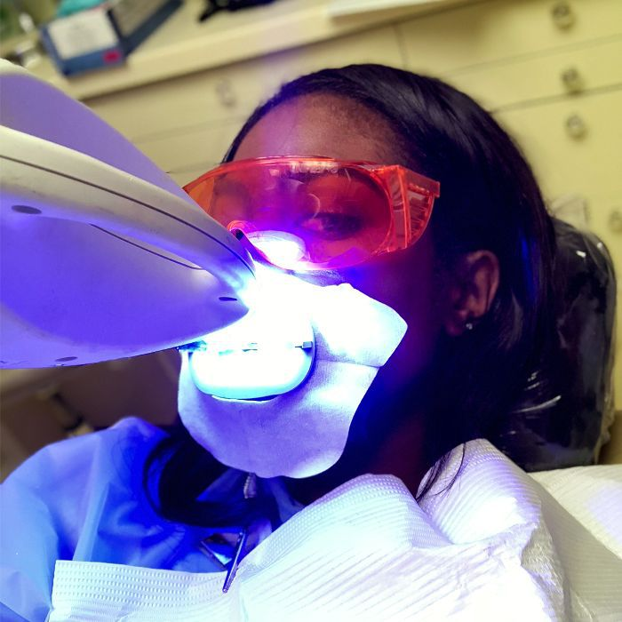

Our Dental Services
Teeth Cleaning

Regular teeth cleaning is essential for maintaining good oral health. Our hygienists use the latest technology to remove plaque and tartar, leaving your teeth feeling smooth and clean.
Fillings

We offer tooth-colored fillings that are designed to match the natural color of your teeth. Our fillings are durable and long-lasting, and can help to restore your teeth to their natural shape and function.
Crowns and Bridges

Our crowns and bridges are custom-made to fit your individual needs. We use high-quality materials and advanced technology to create restorations that are both functional and aesthetically pleasing.
Root Canals

Root canals are a common procedure used to save teeth that are severely damaged or infected. Our experienced dentists use the latest techniques and technology to ensure a comfortable and successful procedure.
Dental Implants

Dental implants are a permanent solution for missing teeth. Our experienced dentists use advanced technology to place implants that are both functional and aesthetically pleasing.
Teeth Whitening
Our teeth whitening services can help to brighten your smile and boost your confidence. We offer both in-office and at-home whitening options to fit your individual needs.
Dental Veneers

We offer Dental veneers which is a popular cosmetic dental treatment designed to improve the appearance of teeth. They are thin, custom-made shells that cover the front surface of teeth to address various aesthetic issues.
Dental Bonding

We offer Dental Bonding which is a technique where a tooth-colored composite resin is applied to the teeth to improve their appearance, shape, or function. The resin is carefully sculpted to match the natural contours of the tooth, then hardened with a special light to bond it securely.